Introduction to Optimization
CO 250
Lecture 18
PDF version of these slides (demo: this PDF version is experimental and may contain errors or differ from the slides)
Lecture Outline
- Review: Integrality of the Bipartite Matching Polytope
- The Primal Minimum Cost Matching LP
- The Dual LP and An Algorithm
Matching Linear Programs
Matching Linear Programs
Last lecture we studied the minimum cost perfect matching problem: given a graph $G = (V, E)$ with edge costs $c_e$, find a perfect matching $M$ minimizing $c(M) = \sum_{e \in M} c_e.$
Introducing a variable $x_e$ for each edge, the integer program is \[ \begin{aligned} \min\quad & \sum_{e \in E} c_e x_e \\ \text{s.t.}\quad & \sum_{e \in E : v \in e} x_e = 1 && \text{for each } v \in V \\ & x_e \ge 0 \\ & x_e \in \Z. \end{aligned} \]
Dropping $x_e \in \Z$ gives the LP relaxation. The LP relaxation can sometimes be a genuinely different problem than the min cost perfect matching problem.
Matching Linear Programs
We saw that the LP relaxation sometimes returns an integral solution, corresponding to a matching, and sometimes a fractional solution.
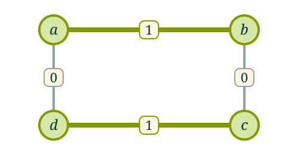
Cycle on 4 vertices (bipartite)
$x^* = (1, 0, 1, 0)$ — integral
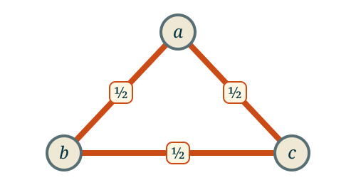
Triangle (not bipartite)
$x^* = (\tfrac12, \tfrac12, \tfrac12)$ — fractional
The key difference: the first graph is bipartite, the second is not.
Matching Linear Programs
A graph that is not bipartite can still have a perfect matching.
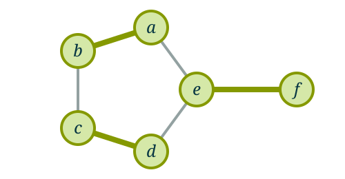
Matching Linear Programs
Integrality of Bipartite Perfect Matching Polytope
For any bipartite graph with $n$ vertices and $m$ edges, let \[P = \Big\{x \in \R^m : \textstyle\sum_{e \in E : v \in e} x_e = 1 \text{ for all } v \in V,\ x \ge 0\Big\}.\]
Every vertex of $P$ has all entries equal to $0$ or $1.$
So for a bipartite graph, the LP relaxation always has an integral optimal vertex, with the same optimal value as the minimum cost perfect matching.
Matching Linear Programs
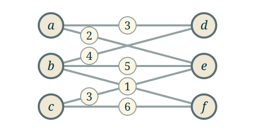
The costs.
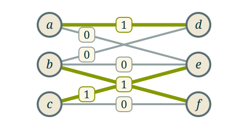
The optimal solution.
\[ \begin{aligned} \min\quad & 3x_{ad} + 2x_{ae} + 4x_{bd} + 5x_{be} +\\ & x_{bf} + 3x_{ce} + 6x_{cf} \\ \text{s.t.}\quad & x_{ad} + x_{ae} = 1 && (a) \\ & x_{bd} + x_{be} + x_{bf} = 1 && (b) \\ & x_{ce} + x_{cf} = 1 && (c) \\ & x_{ad} + x_{bd} = 1 && (d) \\ & x_{ae} + x_{be} + x_{ce} = 1 && (e) \\ & x_{bf} + x_{cf} = 1 && (f) \\ & x \ge 0 \end{aligned} \]
\[x^*_{ad} = x^*_{bf} = x^*_{ce} = 1, \quad x^*_e = 0 \text{ otherwise}\]
\[\sum_{e \in E} c_e x^*_e = 3 + 1 + 3 = 7\]
The Primal and Dual LPs
The Primal Matching LP
Let $G = (V, E)$ be a graph (not necessarily bipartite) with edge costs $c_e.$ The LP relaxation of the minimum cost perfect matching problem is the primal:
\[ \begin{aligned} \min\quad & \sum_{e \in E} c_e x_e \\ \text{s.t.}\quad & \sum_{e \in E : v \in e} x_e = 1 && \text{for each } v \in V \\ & x_e \ge 0 && \text{for each } e \in E. \end{aligned} \]
One variable $x_e$ per edge $e \in E.$
One constraint per vertex $v \in V.$
Taking the Dual
In the primal, we get the following relationships between vertices/constraints in the LP and edges/vertices in the graph.
Primal constraints $\leftrightarrow$ vertices
so dual variables $\leftrightarrow$ vertices.
Primal variables $\leftrightarrow$ edges
so dual constraints $\leftrightarrow$ edges.
The dual reverses these correspondences.
The Dual LP
The primal variable $x_e$ for $e = uv$ appears with coefficient $1$ in exactly the two vertex constraints for $u$ and $v$, so its dual constraint is $y_u + y_v \le c_e.$
\[ \begin{aligned} \text{(P)}\quad \min\quad & \sum_{e \in E} c_e x_e \\ \text{s.t.}\quad & \sum_{e \in E : v \in e} x_e = 1 \quad (v \in V) \\ & x_e \ge 0 \quad (e \in E) \end{aligned} \]
\[ \begin{aligned} \text{(D)}\quad \max\quad & \sum_{v \in V} y_v \\ \text{s.t.}\quad & y_u + y_v \le c_e \quad (e = uv \in E) \\ \end{aligned} \]
Example: Primal and Dual
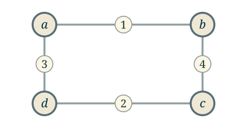
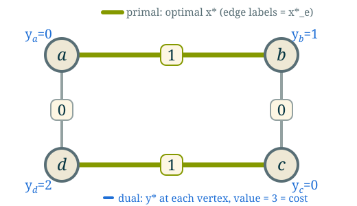
\[ \begin{aligned} \min\quad & x_{ab} + 4x_{bc} + 2x_{cd} + 3x_{da} \\ \text{s.t.}\quad & x_{ab} + x_{da} = 1 && (a) \\ & x_{ab} + x_{bc} = 1 && (b) \\ & x_{bc} + x_{cd} = 1 && (c) \\ & x_{cd} + x_{da} = 1 && (d) \\ & x \ge 0 \end{aligned} \]
\[ \begin{aligned} \max\quad & y_a + y_b + y_c + y_d \\ \text{s.t.}\quad & y_a + y_b \le 1 && (ab) \\ & y_b + y_c \le 4 && (bc) \\ & y_c + y_d \le 2 && (cd) \\ & y_d + y_a \le 3 && (da) \end{aligned} \]
Interpreting the Dual
We can think of the dual to the matching LP as a way to reweight the costs of the edges.
Pick a vertex $v \in V.$ Even if we don't know what the optimal perfect matching is, we know that that perfect matching has one edge incident to $v.$
Imagine that we take all of the edges that touch the vertex $v$, and subtract $y_v$ from the cost of all such edges.
The cost of every perfect matching goes down by $y_v$, so the optimal perfect matchings don't change! Their costs just go down by $y_v.$
Interpreting the Dual
Interpreting the Dual
For an edge $e = uv$, you can imagine the `updated' weight of an edge, given a dual vector $y,$ to be $c_e - y_u - y_v.$
An equality edge of a given dual feasible $y$ is an edge $e$ whose updated cost is $0,$ that is, $c_e = y_u + y_v.$
Complementary slackness says that if $e$ is in an optimal matching, then it is an equality edge of every dual optimal $y.$
Certifying Optimality
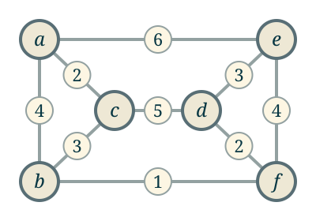
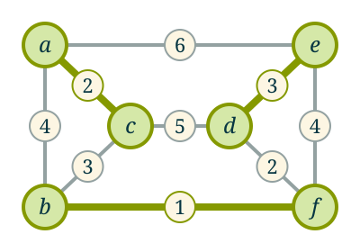
Is this the best perfect matching?
Certifying Optimality
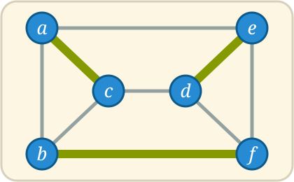
We can use this to certify that a given matching is optimal.
Certifying Optimality
\[ \begin{aligned} \text{(P)}\quad \min\quad & 4x_{ab} + 3x_{bc} + 2x_{ac} + 3x_{de} + 4x_{ef} \\ & {} + 2x_{df} + 5x_{cd} + 6x_{ae} + x_{bf} \\ \text{s.t.}\quad & x_{ab} + x_{ac} + x_{ae} = 1 && (a) \\ & x_{ab} + x_{bc} + x_{bf} = 1 && (b) \\ & x_{bc} + x_{ac} + x_{cd} = 1 && (c) \\ & x_{de} + x_{df} + x_{cd} = 1 && (d) \\ & x_{de} + x_{ef} + x_{ae} = 1 && (e) \\ & x_{ef} + x_{df} + x_{bf} = 1 && (f) \\ & x \ge 0 \end{aligned} \]
\[ \begin{aligned} \text{(D)}\quad \max\quad & y_a + y_b + y_c + y_d + y_e + y_f \\ \text{s.t.}\quad & y_a + y_b \le 4 && (ab) \\ & y_b + y_c \le 3 && (bc) \\ & y_a + y_c \le 2 && (ac) \\ & y_d + y_e \le 3 && (de) \\ & y_e + y_f \le 4 && (ef) \\ & y_d + y_f \le 2 && (df) \\ & y_c + y_d \le 5 && (cd) \\ & y_a + y_e \le 6 && (ae) \\ & y_b + y_f \le 1 && (bf) \\ & y \text{ free} \end{aligned} \]
Check that this is feasible: \[y^* = (y^*_a, y^*_b, y^*_c, y^*_d, y^*_e, y^*_f) = (1, 1, 1, 1, 2, 0)\]
Certifying Optimality
\[ \begin{aligned} \text{(P)}\quad \min\quad & 4x_{ab} + 3x_{bc} + 2x_{ac} + 3x_{de} + 4x_{ef} \\ & {} + 2x_{df} + 5x_{cd} + 6x_{ae} + x_{bf} \\ \text{s.t.}\quad & x_{ab} + x_{ac} + x_{ae} = 1 && (a) \\ & x_{ab} + x_{bc} + x_{bf} = 1 && (b) \\ & x_{bc} + x_{ac} + x_{cd} = 1 && (c) \\ & x_{de} + x_{df} + x_{cd} = 1 && (d) \\ & x_{de} + x_{ef} + x_{ae} = 1 && (e) \\ & x_{ef} + x_{df} + x_{bf} = 1 && (f) \\ & x \ge 0 \end{aligned} \]
\[ \begin{aligned} \text{(D)}\quad \max\quad & y_a + y_b + y_c + y_d + y_e + y_f \\ \text{s.t.}\quad & y_a + y_b \le 4 && (ab) \\ & y_b + y_c \le 3 && (bc) \\ & {\color{#2e7d32}{y_a + y_c \le 2}} && {\color{#2e7d32}{(ac)}} \\ & {\color{#2e7d32}{y_d + y_e \le 3}} && {\color{#2e7d32}{(de)}} \\ & y_e + y_f \le 4 && (ef) \\ & y_d + y_f \le 2 && (df) \\ & y_c + y_d \le 5 && (cd) \\ & y_a + y_e \le 6 && (ae) \\ & {\color{#2e7d32}{y_b + y_f \le 1}} && {\color{#2e7d32}{(bf)}} \\ & y \text{ free} \end{aligned} \]
Check that this is feasible: \[y^* = (y^*_a, y^*_b, y^*_c, y^*_d, y^*_e, y^*_f) = (1, 1, 1, 1, 2, 0)\]
Certifying Optimality
\[ \begin{aligned} \text{(P)}\quad \min\quad & 4x_{ab} + 3x_{bc} + 2x_{ac} + 3x_{de} + 4x_{ef} \\ & {} + 2x_{df} + 5x_{cd} + 6x_{ae} + x_{bf} \\ \text{s.t.}\quad & x_{ab} + x_{ac} + x_{ae} = 1 && (a) \\ & x_{ab} + x_{bc} + x_{bf} = 1 && (b) \\ & x_{bc} + x_{ac} + x_{cd} = 1 && (c) \\ & x_{de} + x_{df} + x_{cd} = 1 && (d) \\ & x_{de} + x_{ef} + x_{ae} = 1 && (e) \\ & x_{ef} + x_{df} + x_{bf} = 1 && (f) \\ & x \ge 0 \end{aligned} \]
\[ \begin{aligned} \text{(D)}\quad \max\quad & y_a + y_b + y_c + y_d + y_e + y_f \\ \text{s.t.}\quad & y_a + y_b \le 4 && (ab) \\ & y_b + y_c \le 3 && (bc) \\ & {\color{#2e7d32}{y_a + y_c \le 2}} && {\color{#2e7d32}{(ac)}} \\ & {\color{#2e7d32}{y_d + y_e \le 3}} && {\color{#2e7d32}{(de)}} \\ & y_e + y_f \le 4 && (ef) \\ & y_d + y_f \le 2 && (df) \\ & y_c + y_d \le 5 && (cd) \\ & y_a + y_e \le 6 && (ae) \\ & {\color{#2e7d32}{y_b + y_f \le 1}} && {\color{#2e7d32}{(bf)}} \\ & y \text{ free} \end{aligned} \]
Check that this is feasible: \[y^* = (y^*_a, y^*_b, y^*_c, y^*_d, y^*_e, y^*_f) = (1, 1, 1, 1, 2, 0)\]
Complementary slackness means that $x_{uv} = 0$ except for $x_{ac}$, $x_{de}$ and $x_{bf}.$ Note that $\{ac, de, bf\}$ is a perfect matching!
Certifying Optimality
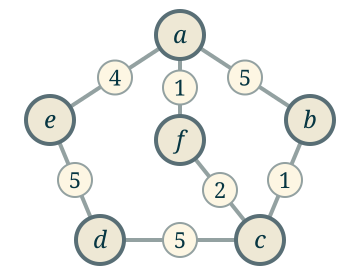
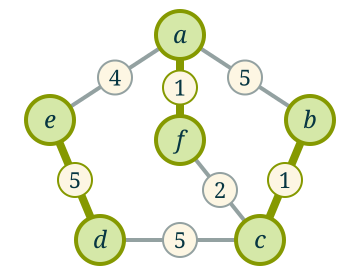
Certifying Optimality
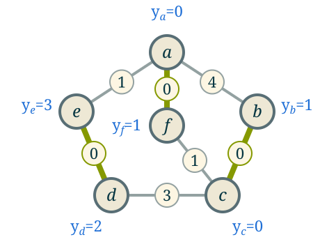
Certifying Optimality
\[ \begin{aligned} \text{(P)}\quad \min\quad & 5x_{ab} + x_{bc} + 5x_{cd} + 5x_{de} + 4x_{ae} + x_{af} + 2x_{cf} \\ \text{s.t.}\quad & x_{ab} + x_{ae} + x_{af} = 1 && (a) \\ & x_{ab} + x_{bc} = 1 && (b) \\ & x_{bc} + x_{cd} + x_{cf} = 1 && (c) \\ & x_{cd} + x_{de} = 1 && (d) \\ & x_{de} + x_{ae} = 1 && (e) \\ & x_{af} + x_{cf} = 1 && (f) \\ & x \ge 0 \end{aligned} \]
\[ \begin{aligned} \text{(D)}\quad \max\quad & y_a + y_b + y_c + y_d + y_e + y_f \\ \text{s.t.}\quad & y_a + y_b \le 5 && (ab) \\ & y_b + y_c \le 1 && (bc) \\ & y_c + y_d \le 5 && (cd) \\ & y_d + y_e \le 5 && (de) \\ & y_a + y_e \le 4 && (ae) \\ & y_a + y_f \le 1 && (af) \\ & y_c + y_f \le 2 && (cf) \\ & y \text{ free} \end{aligned} \]
Check that this is feasible: \[y^* = (y^*_a, y^*_b, y^*_c, y^*_d, y^*_e, y^*_f) = (0, 1, 0, 2, 3, 1)\]
Certifying Optimality
\[ \begin{aligned} \text{(P)}\quad \min\quad & 5x_{ab} + x_{bc} + 5x_{cd} + 5x_{de} + 4x_{ae} + x_{af} + 2x_{cf} \\ \text{s.t.}\quad & x_{ab} + x_{ae} + x_{af} = 1 && (a) \\ & x_{ab} + x_{bc} = 1 && (b) \\ & x_{bc} + x_{cd} + x_{cf} = 1 && (c) \\ & x_{cd} + x_{de} = 1 && (d) \\ & x_{de} + x_{ae} = 1 && (e) \\ & x_{af} + x_{cf} = 1 && (f) \\ & x \ge 0 \end{aligned} \]
\[ \begin{aligned} \text{(D)}\quad \max\quad & y_a + y_b + y_c + y_d + y_e + y_f \\ \text{s.t.}\quad & y_a + y_b \le 5 && (ab) \\ & {\color{#2e7d32}{y_b + y_c \le 1}} && {\color{#2e7d32}{(bc)}} \\ & y_c + y_d \le 5 && (cd) \\ & {\color{#2e7d32}{y_d + y_e \le 5}} && {\color{#2e7d32}{(de)}} \\ & y_a + y_e \le 4 && (ae) \\ & {\color{#2e7d32}{y_a + y_f \le 1}} && {\color{#2e7d32}{(af)}} \\ & y_c + y_f \le 2 && (cf) \\ & y \text{ free} \end{aligned} \]
Check that this is feasible: \[y^* = (y^*_a, y^*_b, y^*_c, y^*_d, y^*_e, y^*_f) = (0, 1, 0, 2, 3, 1)\]
Certifying Optimality
\[ \begin{aligned} \text{(P)}\quad \min\quad & 5x_{ab} + x_{bc} + 5x_{cd} + 5x_{de} + 4x_{ae} + x_{af} + 2x_{cf} \\ \text{s.t.}\quad & x_{ab} + x_{ae} + x_{af} = 1 && (a) \\ & x_{ab} + x_{bc} = 1 && (b) \\ & x_{bc} + x_{cd} + x_{cf} = 1 && (c) \\ & x_{cd} + x_{de} = 1 && (d) \\ & x_{de} + x_{ae} = 1 && (e) \\ & x_{af} + x_{cf} = 1 && (f) \\ & x \ge 0 \end{aligned} \]
\[ \begin{aligned} \text{(D)}\quad \max\quad & y_a + y_b + y_c + y_d + y_e + y_f \\ \text{s.t.}\quad & y_a + y_b \le 5 && (ab) \\ & {\color{#2e7d32}{y_b + y_c \le 1}} && {\color{#2e7d32}{(bc)}} \\ & y_c + y_d \le 5 && (cd) \\ & {\color{#2e7d32}{y_d + y_e \le 5}} && {\color{#2e7d32}{(de)}} \\ & y_a + y_e \le 4 && (ae) \\ & {\color{#2e7d32}{y_a + y_f \le 1}} && {\color{#2e7d32}{(af)}} \\ & y_c + y_f \le 2 && (cf) \\ & y \text{ free} \end{aligned} \]
Check that this is feasible: \[y^* = (y^*_a, y^*_b, y^*_c, y^*_d, y^*_e, y^*_f) = (0, 1, 0, 2, 3, 1)\]
\[x_{ij} = 1 \text{ when } ij \text{ is green}\]
The Primal-Dual Algorithm
The Primal-Dual Algorithm
Goal: solve the minimum cost perfect matching problem on a bipartite graph using the dual LP.
The matching LP has an integral optimal vertex, so the simplex method works. But it ignores the graph. We can get a faster algorithm if we make use of the graph structure.
One thing is that it is often practically much easier to find A perfect matching, than a minimum cost one.
The Primal-Dual Algorithm
For this class, we'll mostly be dealing with graphs where we can find a perfect matching by eye.
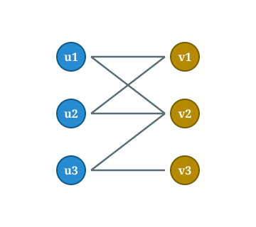
The Primal-Dual Algorithm
For this class, we'll mostly be dealing with graphs where we can find a perfect matching by eye.
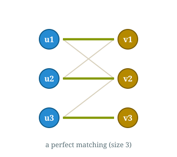
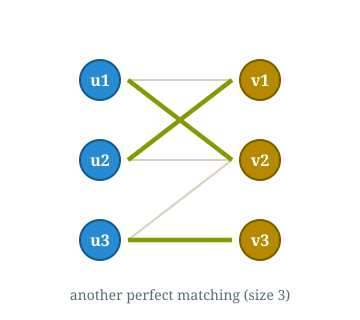
This graph has exactly two perfect matchings.
The Primal-Dual Algorithm
In each iteration, we will have a dual feasible $y.$
Write $E^{=}$ for the set of equality edges of a dual feasible $y$, the edges so that $c_e = y_u + y_v.$
If $E^{=}$ contains a perfect matching $M$, then $M$ is a minimum cost perfect matching by complementary slackness!
The Primal-Dual Algorithm
At a high level, the algorithm does the following:
- At each stage, we will have a dual feasible solution $y$ in mind.
- If this dual $y$ is optimal, then there will be an optimal primal solution satisfying complementary slackness. This means there is a perfect matching in the graph induced by $E^=.$
- If this dual $y$ is not optimal, then there will be no perfect matching in $E^=$; we will need to update $y$ to a new value.
The example below shows how this works.
The Primal-Dual Algorithm
Example. An input to the algorithm
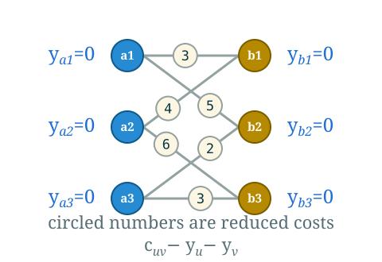
Start with $y = 0.$
This is dual feasible, since every cost is nonnegative.
There are currently no equality edges, so $E^=$ is empty and there is no perfect matching amongst the edges in $E^=.$
We need to increase some of the entries of $y$.
The Primal-Dual Algorithm
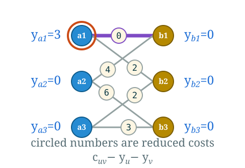
Increase $y_{a_1}$ until an edge at $a_1$ has reduced cost $0$.
Now, $E^= = \{a_1b_1\}$, and there is still no perfect matching.
Let's increase $y_{a_2}$ next.
The Primal-Dual Algorithm
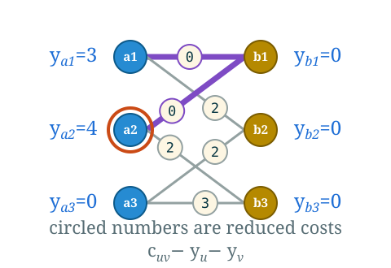
Increase $y_{a_2}$.
Now $E^= = \{a_1b_1, a_2b_1\}$, but still no perfect matching.
The Primal-Dual Algorithm
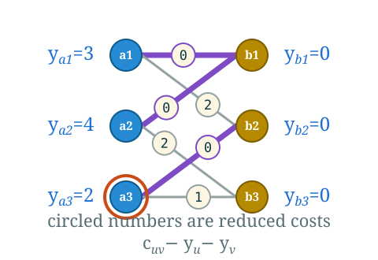
Increase $y_{a_3}$.
Now $E^= = \{a_1b_1, a_2b_1, a_3 b_2\}$, but still no perfect matching.
The Primal-Dual Algorithm
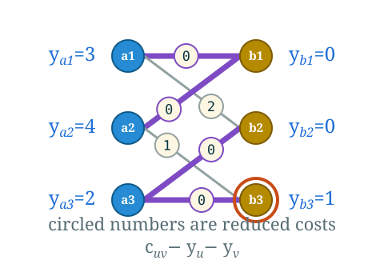
Increase $y_{b_3}$.
Now $E^= = \{a_1b_1, a_2b_1, a_3 b_2, a_3b_3\}$, but still no perfect matching!
We can't increase any individual $y_v$ any more! To make more progress, we will need to also decrease the weights on some vertices.
The Primal-Dual Algorithm
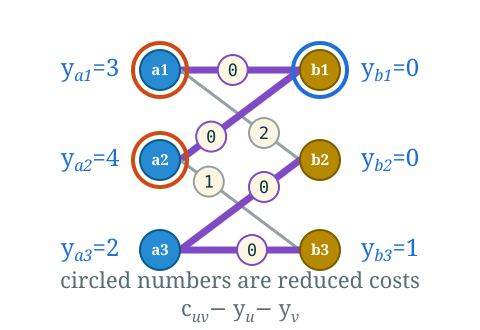
$y = (3,4,2;\,0,0,1),$ $\sum_v y_v = 10.$
Why is there is no perfect matching in the purple edges? Because $a_1$ and $a_2$ both need $b_1.$
We can use this structure though: imagine increasing both $y_{a_1}$ and $y_{a_2}$ by 1, and also decreasing $y_{b_1}$ by 1. The edges $a_1b_1$ and $a_2b_1$ keep the same total weight $y_u + y_v,$ so they remain equality edges.
The Primal-Dual Algorithm
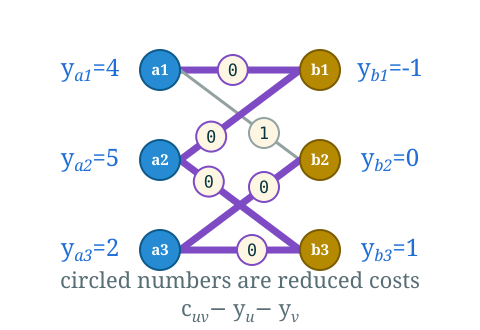
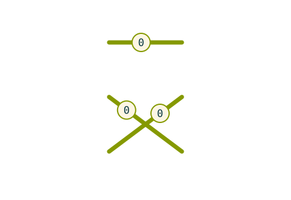
$y = (4,5,2;\,-1,0,1),$ $\sum_v y_v = 11.$
$E^{=}$ has the perfect matching $M = \{a_1b_1,\ a_2b_3,\ a_3b_2\}.$
$c(M) = 3+6+2 = 11 = \sum_v y_v,$ so $M$ is a minimum cost perfect matching.
The Primal-Dual Algorithm
If at some point, we have found some $y$ so that $E^=$ contains a perfect matching, then we are done; that perfect matching is minimum cost.
The tricky thing is finding a way to update $y$ when $E^=$ has no perfect matching. To do this, we will make use of a combinatorics theorem.
The Primal-Dual Algorithm (Hall's Theorem)
For a set of vertices, $S \subseteq V$, the neighborhood of $S$ is the set $\mathcal{N}(S) \subseteq V$ of vertices that share an edge with some vertex of $S.$
For a bipartite graph $G$ whose vertices are separated into partitions $V_1$ and $V_2$, a deficient set is a set $S \subseteq V$ so that
- $S$ is either contained in $V_1$ or $V_2$
- $\mathcal{N}(S)$ has fewer elements than $S$ does.
Hall's Theorem
Suppose that $G$ is a bipartite graph. The graph $G$ has no perfect matching if and only if there exists some deficient set of vertices.
The Primal-Dual Algorithm (Hall's Theorem)
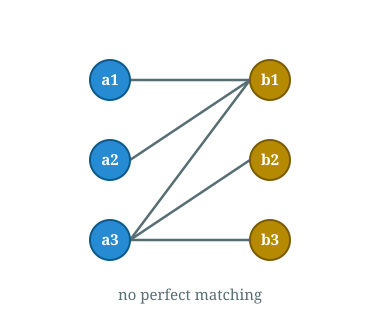
This graph has no perfect matching.
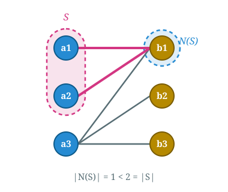
$S = \{a_1, a_2\}$ is deficient: $|\mathcal{N}(S)| = 1 < 2 = |S|.$
$a_1$ and $a_2$ must both be matched into $\mathcal{N}(S) = \{b_1\}$, but there is only one vertex there.
The Primal-Dual Algorithm
We can prove Hall's theorem using Farkas' Lemma!
Using our integrality theorem, $G$ has no perfect matching if and only if the following polytope is empty \[ P = \{x \in \R^E : \sum_{e \in E : v \in e} x_e = 1 \text{ for all } v\in V,\ x \ge 0\}. \]
Farkas' lemma says that $\{x : Ax = b,\ x \ge 0\}$ is empty if and only if there is some $w$ with $A^\top w \ge 0$ and $b^\top w < 0.$ Here $A$ is the vertex-edge incidence matrix of $G$ and $b$ is the all-ones vector.
So $P$ is empty if and only if there is some $w \in \R^V$ so that $w_u + w_v \ge 0$ for each $uv \in E$ and so that $\sum_{v \in V} w_v < 0.$
The Primal-Dual Algorithm
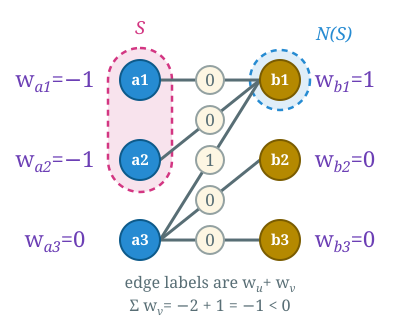
Let's assume there is a set $S$ which is deficient (so $S$ lies inside $V_1$ or inside $V_2$), then define $w_u = -1$ if $u \in S$, $w_v = 1$ if $v \in \mathcal{N}(S)$ and $w_v = 0$ in all other cases.
Let's see that $w$ certifies infeasibility. Let $uv \in E.$ If neither $u$ nor $v$ is in $S,$ then $w_u$ and $w_v$ are both at least $0,$ and so $w_u + w_v \ge 0.$
If $u$ or $v$ is in $S,$ then exactly one of them is (since $S$ lies inside one part), and the other is in $\mathcal{N}(S)$ by definition. So, $w_u + w_v = 1 - 1 = 0.$ Hence $w_u + w_v \ge 0$ for every edge.
The Primal-Dual Algorithm
Finally, $\sum_{v \in V} w_v = |\mathcal{N}(S)| - |S| < 0.$ So $w$ certifies that $P$ is empty, and $G$ has no perfect matching.
The Primal-Dual Algorithm
This shows the direction that if there is a deficient set, then there are no perfect matchings. The other direction (that there being no matching implies that there is a deficient set) can be shown with a more careful argument.
The Primal-Dual Algorithm
Returning to the algorithm, let's say we are at a stage where we have a dual feasible $y$, but the equality edges $E^=$ contains no perfect matching.
By Hall's theorem applied to the graph with edge set $E^=,$ there is a deficient subset $S \subseteq V_1$ (or $V_2$) of this graph.
We will update $y$ by increasing $y_v$ by some number $t > 0$ for every $v \in S$ and decreasing $y_v$ by $t$ for every $v \in \mathcal{N}(S),$ where $\mathcal{N}$ is taken in $E^=.$ We choose $t$ as large as possible while keeping $y$ feasible.
Note that this is the same as updating to $y - tw,$ where $w$ is the vector we constructed in the proof of one direction of Hall's theorem.
The Primal-Dual Algorithm
Note that this update keeps $y$ feasible.
We have already seen that $w_u + w_v \ge 0$ for all $uv \in E^=$ and that $\sum_{v \in V} w_v < 0.$ So the constraints of the equality edges stay satisfied under $y - tw,$ and the constraints of all other edges are satisfied for small enough $t > 0.$ Hence $y - tw$ is dual feasible for small $t > 0.$
The objective $\sum_{v} (y - tw)_v = \sum_{v} y_v - t \sum_{v} w_v$ increases as a function of $t.$
Therefore, we are making positive progress each time we update $y$.
The Primal-Dual Algorithm
The value of $t$ that we use can be computed as \[t = \min\{c_{uv} - y_u - y_v : uv \in E,\ u \in S,\ v \notin \mathcal{N}(S)\}.\]
That is, we take the smallest reduced cost of an edge from $S$ to a vertex outside $\mathcal{N}(S).$ None of these edges is an equality edge, so $t > 0.$ Edges from $S$ into $\mathcal{N}(S)$ never limit $t,$ since one endpoint goes up by $t$ and the other goes down by $t.$
If there is no edge from $S$ to a vertex outside $\mathcal{N}(S),$ then $S$ is also deficient in $G$ itself, so $G$ has no perfect matching and the minimum cost perfect matching problem is infeasible.
The Primal-Dual Algorithm
Input: a bipartite graph $G = (V_1 \cup V_2, E)$ with nonnegative edge costs $c$ which has a perfect matching.
Initialize $y = 0$.
Start Round: Find the equality edges $E^=$ of the current $y.$ If there is a perfect matching $M$ amongst the edges of $E^=,$ terminate with $M,$ which has minimum cost.
If no perfect matching exists, then
- Find a deficient set $S$ (where we only look at equality edges), contained in $V_1$ or in $V_2.$
- Find every vertex that is joined by an equality edge to some vertex of $S,$ and call this set $N.$
- Amongst all edges $uv \in E$ with $u \in S$ and $v \notin N,$ find the smallest reduced cost $c_{uv} - y_u - y_v,$ and call it $t.$
- Add $t$ to $y_v$ for all vertices in $S,$ and subtract $t$ from $y_v$ for all vertices in $N.$
Go back to the start of the round.
The Primal-Dual Algorithm
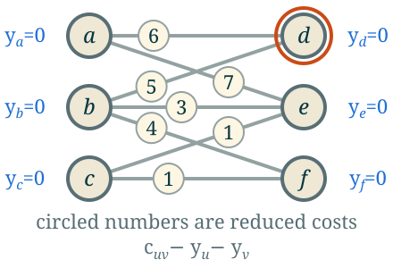
\[E^{=} = \emptyset\]
\[S = \{d\}, \quad N_{E^{=}}(S) = \emptyset\]
\[t = \min\{6, 5\} = 5\]
The Primal-Dual Algorithm
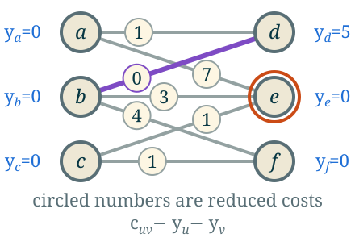
\[E^{=} = \{bd\}\]
\[S = \{e\}, \quad N_{E^{=}}(S) = \emptyset\]
\[t = \min\{7, 3, 1\} = 1\]
The Primal-Dual Algorithm
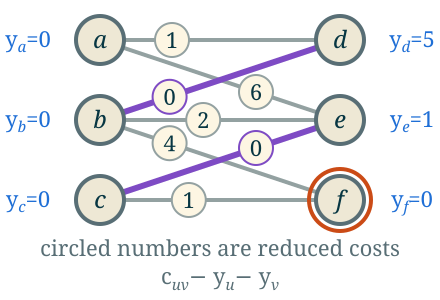
\[E^{=} = \{bd, ce\}\]
\[S = \{f\}, \quad N_{E^{=}}(S) = \emptyset\]
\[t = \min\{4, 1\} = 1\]
The Primal-Dual Algorithm
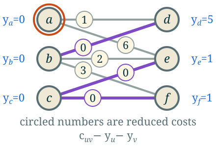
\[E^{=} = \{bd, ce, cf\}\]
\[S = \{a\}, \quad N_{E^{=}}(S) = \emptyset\]
\[t = \min\{1, 6\} = 1\]
The Primal-Dual Algorithm
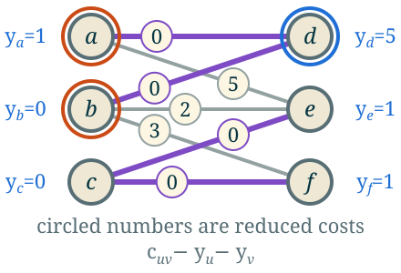
\[E^{=} = \{ad, bd, ce, cf\}\]
\[S = \{a, b\}, \quad N_{E^{=}}(S) = \{d\}\]
\[t = \min\{5, 2, 3\} = 2\]
The Primal-Dual Algorithm
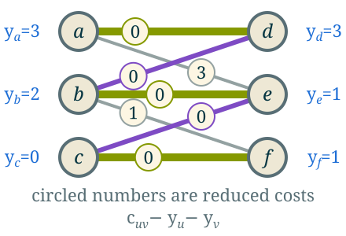
\[E^{=} = \{ad, bd, be, ce, cf\}\]
\[M = \{ad, be, cf\}\]
\[\begin{aligned} c(M) &= 6 + 3 + 1 = 10 \\ \sum_{w} y_w &= 10 \end{aligned}\]
The Primal-Dual Algorithm
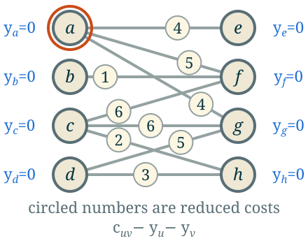
\[E^{=} = \emptyset\]
\[S = \{a\}, \quad N_{E^{=}}(S) = \emptyset\]
\[t = \min\{4, 5, 4\} = 4\]
The Primal-Dual Algorithm
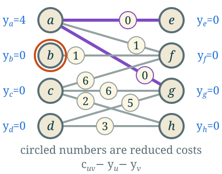
\[E^{=} = \{ae, ag\}\]
\[S = \{b\}, \quad N_{E^{=}}(S) = \emptyset\]
\[t = \min\{1\} = 1\]
The Primal-Dual Algorithm
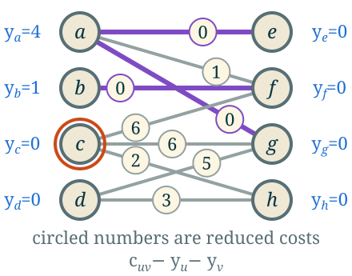
\[E^{=} = \{ae, ag, bf\}\]
\[S = \{c\}, \quad N_{E^{=}}(S) = \emptyset\]
\[t = \min\{6, 6, 2\} = 2\]
The Primal-Dual Algorithm
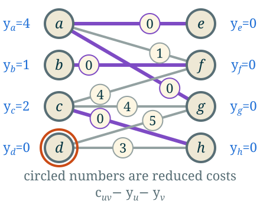
\[E^{=} = \{ae, ag, bf, ch\}\]
\[S = \{d\}, \quad N_{E^{=}}(S) = \emptyset\]
\[t = \min\{5, 3\} = 3\]
The Primal-Dual Algorithm
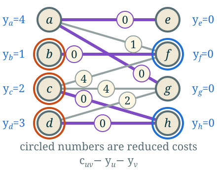
\[E^{=} = \{ae, ag, bf, ch, dh\}\]
\[S = \{b, c, d\}, \quad N_{E^{=}}(S) = \{f, h\}\]
\[t = \min\{4, 2\} = 2\]
The Primal-Dual Algorithm

\[E^{=} = \{ae, ag, bf, ch, dg, dh\}\]
\[M = \{ae, bf, ch, dg\}\]
\[\begin{aligned} c(M) &= 4 + 1 + 2 + 5 = 12 \\ \sum_{w} y_w &= 12 \end{aligned}\]